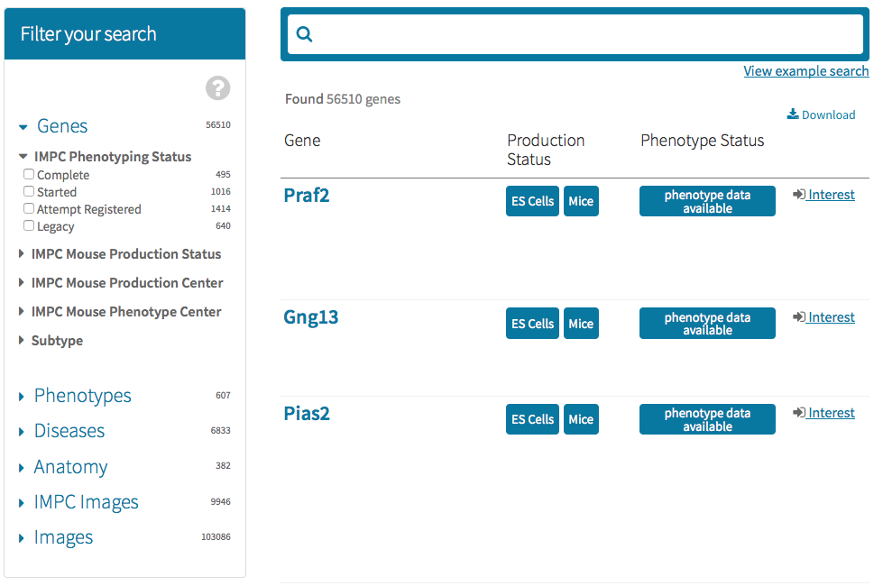
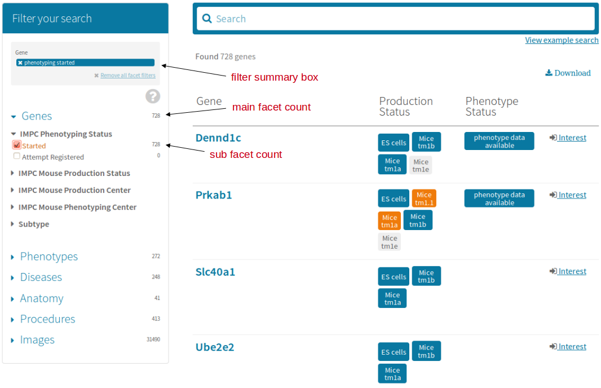
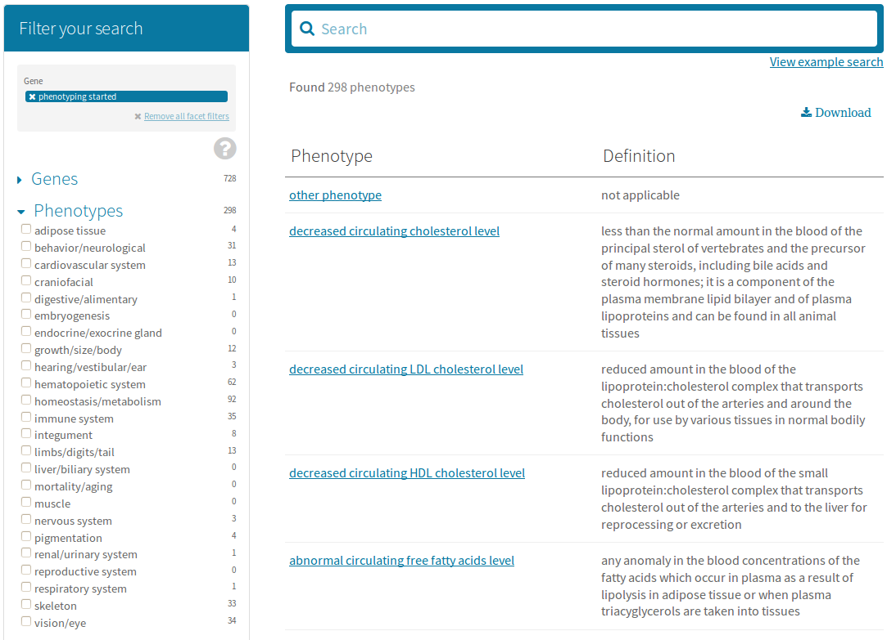
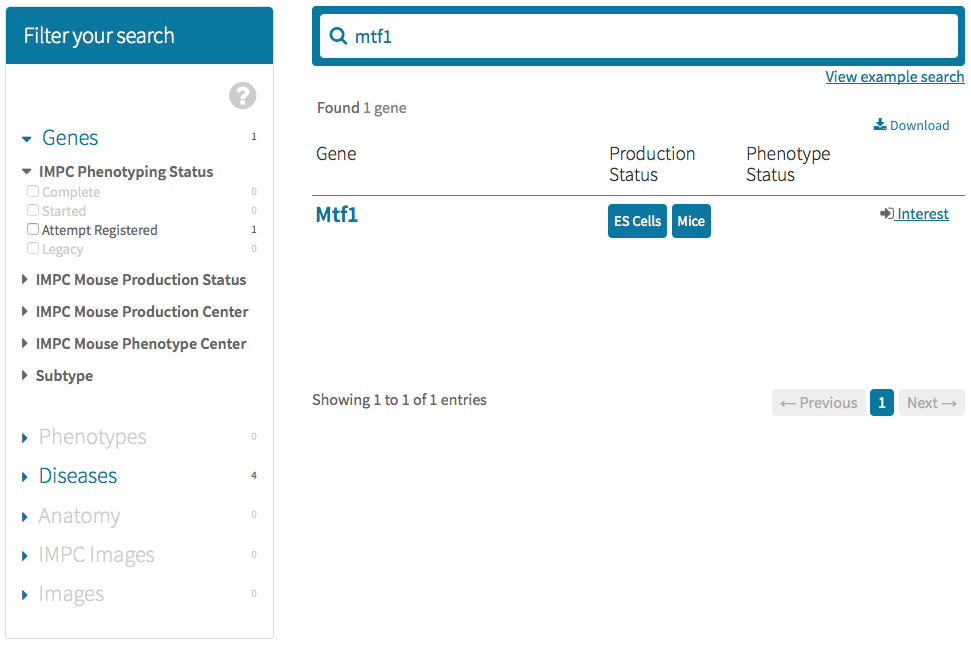
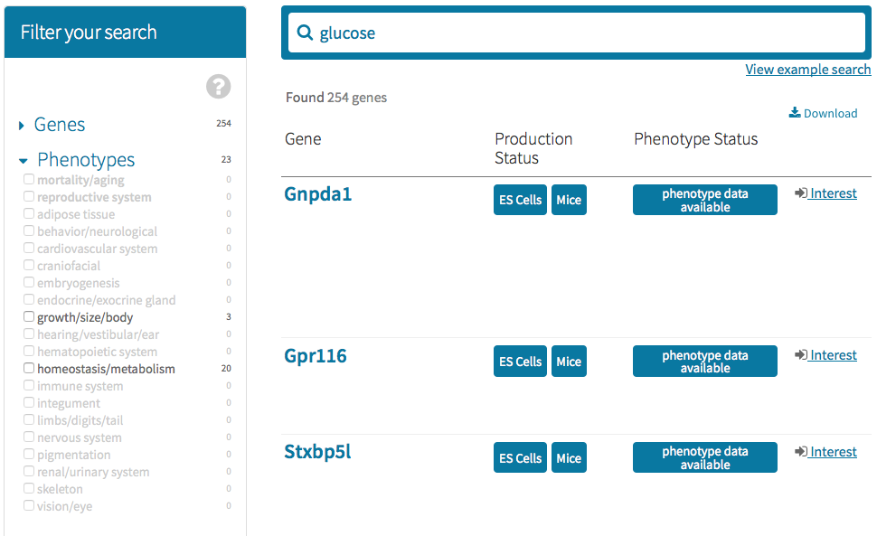
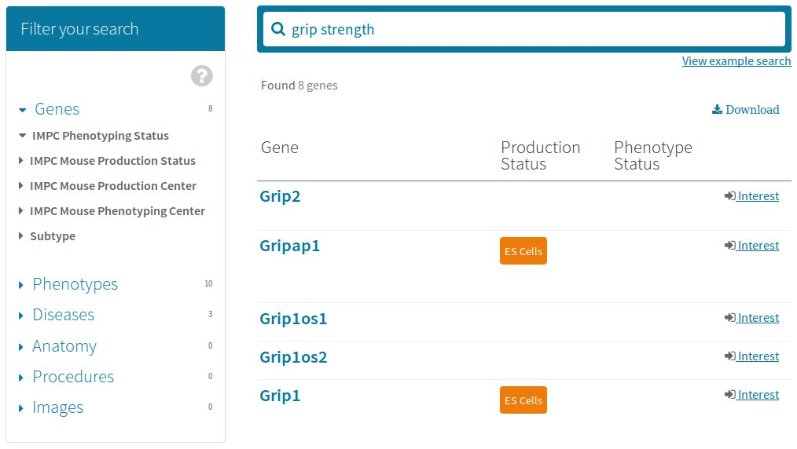

Explore the diverse entry points to mouse phenotype data.
Currently IMPC portal supports 6 main data types on the search page. Ie, Genes, Phenotypes, Diseases, Anatomy, Procedures and Images. These are the main facets designed for our facet search interface.Each main data type has sub data types which act as subfacet filters to allow for data filtering.
Main data type browsing

Cross data type browsing

To see this, click on the 'Phenotypes' main facet, for example, to expand its subfacets.
Note that the 'Genes' main facet will then be closed.

There, you can also remove individual filter(s) - same as when you untick a checkbox of a subfacet - or remove all filters in one go with the 'Remove all facet filters' link.
Quick Gene Search
Eg. search by gene symbol "mtf1":

Quick Phenotype Search
Eg. search by phenotype "glucose":

Quick Disease Search
Eg. Search for "cardiac" diseases:

Quick Anatomy Search
Eg. search by anatomy "eye":

Quick Assay Search
Eg. search by parameter "grip strength":

Quick Image Search
By default, Image View will be displayed, where annotations to an image is enlisted.
Eg. search by phenotype "immune":
To view images grouped by annotations, simply click on the "Show Annotation View" button to the top-right corner of the results grid. The label of the same button will then be switched to "Show Image View" so that you can toggle the views.

Data Export of Search Results
click on either TSV (tab separated) or XLS (MS Excel) buttons for format of export.
To limit the export data on current page only, choose the buttons of the "Current paginated entries in table",
whereas "All entries in table" will export the whole search results".
A warning message dialog box will be displayed if the dataset is large and download can take longer depending on your network speed.